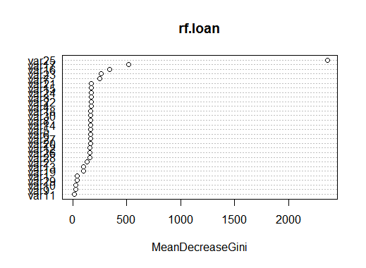

Use RandomForest and DecisionTress to build your model on train data and compare their performance on test data. Also get the variable importance plot for the model.
Evaluation Criterion :Error
Aim here is to build predictive model for predicting whether customers will succeed or fail to repay the loans.
Decision Tree, Random Forest Model, Pruning Trees, Terminal Nodes.
We will first build decision tree model followed by random forest classification model: The steps followed are given below:
Error generated on by Random forest is 13.20% as against 17.5% by Decision tree model. Hence random forest is little better than decision tree model.
Decision tree with 7 terminal nodes.
Pruned tree plot showing optimised number of nodes.(7 nodes)
Variable Importance plot showing variables 25,17,16,23 as most important variables contributing to the model.